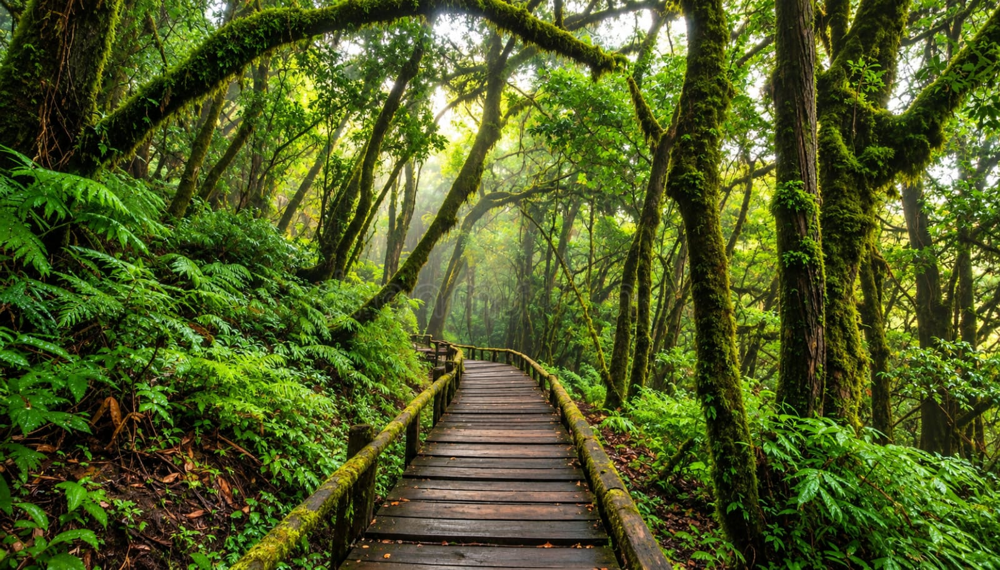

Bhutan
Thimphu | Paro | Punakha | Phobjikha
A quiet Himalayan kingdom of monasteries, mountain valleys and timeless traditions.
Explore this journey →Nepal
Kathmandu | Pokhara | Chitwan | Nagarkot
From ancient cities to Himalayan horizons, discover Nepal at your own pace.
Explore this journey →Sri Lanka
Colombo | Kandy | Ella | Galle | Bentota
Tea country, coastal escapes, heritage and tropical landscapes in one island journey.
Explore this journey →
Thailand
Bangkok | Phuket | Krabi | Chiang Mai
A vibrant blend of island escapes, cultural treasures and effortless tropical living.
Explore this journey →Vietnam
Hanoi | Ha Long Bay | Da Nang | Hoi An | Ho Chi Minh City
A land of hidden stories, timeless streets, dramatic landscapes and rich local culture.
Explore this journey →A wider world, thoughtfully planned.
We’ll help you connect the places, stays and experiences that make an international trip feel personal.
Plan an outbound journey →